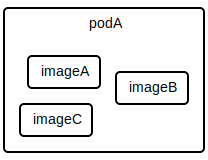
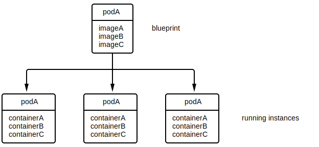

Kubernetes is a service orchestration framework that provides many of the plumbing pieces required for running services. These services include ...
Kubernetes API is exposed as a RESTful interface, meaning everything is represented as an object and accessed / mutated using standard REST verbs (GET, PUT, DELETE, etc..). The following sub-sections gives a overview of the different object types as well as other high-level concepts.
Kubernetes is structured around containers.
In the context of containers, an ...
image is an application (or set of applications) packaged with all of its dependencies as an immutable and isolated filesystem. The filesystem typically contains all dependencies required for the application(s) run sealed at their correct version:
Images also typically include metadata describing its needs and operational standards. For example, the metadata may stipulate that the image ...
container is an instance of an image. A container creates an isolated copy of the image's filesystem, isolates the resources required for that image, and launches the entrypoint application for that image. That container can't see or access anything outside of the container unless explicitly allowed to by the user. For example, opening a port 8080 on a container won't open port 8080 on the host running it, but the user can explicitly ask that port 8080 in the container map to some port on the host.
As shown in the entity diagram above, each container is created from a single image, but that same image can be used for to create multiple containers. Another way to think about it is that an image is the blueprint of a factory and a container is the actual factory built from that blueprint. You can build multiple factories from the same blueprint.
Kubernetes requires two core components to run:
Different vendors provide different implementations of each. For example, certain vendors provide an OCI runtime that use virtualization technology for isolation instead of standard Linux isolation (e.g. cgroups).

OCIs and OCRs are also the basis for container engines, tools that are responsible for creating and running containers (similar in nature Kubernetes without the orchestration) as well as creating images and other high-level functionality such as local testing of containers. Docker Engine is an example of a container engine.

Kubernetes organizes services as a set of containers called pod, where each pod is an isolated set of images.

Similar to images, you can think of a pod as a blueprint. Many instances of a pod may be running on the cluster at the same time, often in an effort to distribute load and / or provide redundancy.

Containers within a pod are isolated in terms of their resource requirements (e.g. CPU, memory, and disk), but they share the same ...
Kubernetes orchestrates containers over a cluster of machines. The containers for a pod are guaranteed to all be running on the same machine. As such, pod are usually structured in a way that their containers are tightly coupled and scale together. For example, a pod with two containers, a WordPress server and its required MySQL database server, is a bad usage example because those two ...
Contrast that to an example of a pod with two containers, an application server and an associated log watcher. This is a good example because the two containers ...
Nodes are the machines that pod run on. A Kubernetes cluster often contains multiple nodes, each with a certain amount of resources. Pod get assigned to nodes based on their resource requirements. For example, if a pod A requires 2gb of memory and node C has 24 gigs available, that node may get assigned to run that pod.

Kubernetes typically attempts to schedule multiple instances of the same pod on different nodes, such that a downed node won't take out all instances of the service that pod runs. In the example above, pod instances of the same type are spread out across the 3 nodes.
Kubernetes has a leader-follower architecture, meaning that of the nodes a small subset is chosen to lead / manage the others. The leaders are referred to as master nodes while the followers are referred to as worker nodes.

A master node can still run pod just like the worker nodes, but some of its resources will be tied up for the purpose of managing worker nodes.
Services are a discovery and load balancing mechanism. A service exposes a set of pod under a single fixed unified hostname and IP, routing traffic to that set by load balancing incoming requests across the set. Any external application would need to use a service's hostname because the IP / host of the single pod instances aren't fixed, exposed, or known. That is, pod are transient and aren't guaranteed to always reside on the same node. As they shutdown, come up, restart, move between nodes, etc.., there's no implicit mechanism that requestors can use to route their requests accordingly.
A service fixes this my internally tracking such changes and providing a single unified point of access.

⚠️NOTE️️️⚠️
The book mentions why DNS can't be used directly. For example, having a basic DNS service which returns a list of all up-and-running pod IPs won't work because ...
The service fixes this because it acts as a load balancing proxy and its IP / host never changes (DNS caching won't break anything).
Objects within Kubernetes may be assigned key-value pairs. Two types of key-value pair assignments exist:
In other words, labels are used to identity objects while annotations are not. For example if you have different classes of worker nodes in your cluster, it may be a good idea to label each node with its class. That way, if you wanted to deprecate a specific class, you'd be able to targe them as a group and shut them down.
Labels are targeted using a simple language called label selectors.
| Operator | Description |
|---|---|
key=value |
key is set to value |
key!=value |
key is not set to value |
key in (value1, value2, ...) |
key is either value1, value2, ... |
key notin (value1, value2, ...) |
key is neither value1, value2, ... |
key |
a value is set for key |
!key |
a value not set for key |
key1=value1,key2=value2 |
key1 is set to value1 and key2 is set to value2 |
Kubernetes uses labels for many of its internal services. For example, label selectors are used for deciding ...
If there are a large number of keys / annotations, either because the organization set them directly or because they're being set by external tools, the chance of a collision increases. To combat this, keys for labels and annotations can optionally include a prefix (separated by a slash) that maps to a DNS subdomain to help disambiguate it. For example, company.com/my_key rather than just having my_key.
⚠️NOTE️️️⚠️
The book states that key name itself can be at most 63 chars. If a prefix is included, it doesn't get included in that limit. A prefix can be up to 253 chars.
TODO: put in sample manifest
A service tracks the status of the pod it routes to to determine which ones are healthy and load balances requests accordingly. A pod's health is determined by two factors:
These probes are defined directly in the pod manifest.

⚠️NOTE️️️⚠️
Internally, an EndPoints object is used to track pod. When you create a service, Kubernetes automatically creates an accompanying EndPoints object that the service makes use of.
TODO: talk about the different levels which a service can be exposed (e.g. internally in the cluster vs externally)
Services of type ClusterIP are only accessible from within the cluster. The hostname for a ClusterIP service is broken down as follows: NAME.NAMESPACE.svc.CLUSTER
default).cluster.local.).Depending on what level you're working in, a hostname may be shortened. For example, if the requestor and the service are within ...
TODO: Talk about setting node ports on a service, where a port is opened on all nodes of the cluster that routes to the service
TODO: Talk about setting node ports on a service, where a port is opened on all nodes of the cluster that routes to the service
TODO: Talk about setting node ports on a service, where a port is opened on all nodes of the cluster that routes to the service
TODO: Talk about setting a service as load balancer, requires cloud support
TODO: Talk about setting a service as load balancer, requires cloud support
TODO: Talk about setting a service as load balancer, requires cloud support
A pod manifest is a declarative configuration of a pod (blueprint of a pod).
apiVersion: v1
kind: Pod
metadata:
name: my_pod
spec:
containers:
- image: gcr.io/my_company/my_pod:v1
name: my_pod
resources:
requests:
cpu: "500m"
memory: "128Mi"
limits:
cpu: "1000m"
memory: "256Mi"
volumeMounts:
- mountPath: "/data"
name: "kuard-data"
ports:
- containerPort: 8080
name: http
protocol: TCP
livenessProbe:
httpGet:
path: /healthy
port: 8080
initialDelaySeconds: 5
timeoutSeconds: 1
periodSeconds: 10
failureThreshold: 3
livenessProbe:
httpGet:
path: /ready
port: 8080
initialDelaySeconds: 5
timeoutSeconds: 1
periodSeconds: 10
failureThreshold: 3
volumes:
- name: "my_data"
hostPath:
path: "/var/lib/my_data" # literally mounts a path from the worker node? not persistant if node modes
- name: "my_data_nfs"
nfs:
server: nfs.server.location
path: "/path/on/nfs"
Pod manifests are typically broken into two sections:
spec/containers - the containers that make up the pod.spec/volumes - the volumes required by the pod's containers.Shared volumes are declared under spec/volumes of the pod manifest and mounted on containers under containers/VolumeMount. For example, ...
apiVersion: v1
kind: Pod
metadata:
name: my_pod
spec:
containers:
- image: gcr.io/my_company/my_pod:v1
name: my_pod
volumeMounts:
- mountPath: "/data"
name: "kuard-data"
...
volumes:
- name: "my_data"
hostPath:
path: "/var/lib/my_data"
Each volume declaration must have a name followed by a configuration. Type types of volumes supported are ...
hostPath - A volume that's backed by a directory directly on the worker node running the pod. This won't persist if the Pod gets moved to another worker node.
hostPath:
path: "/var/lib/my_data" # literally a path from the worker node
nfs - A volume that's backed by NFS storage.
nfs:
server: nfs.server.location
path: "/path/on/nfs"
kubectl commands are typically organized into contexts, where each context is defines contextual information about the cluster: cluster location, cluster authentication, and default namespace. To ...
kubectl config set-context {CTX} --cluster={VAL}kubectl config set-context {CTX} --user={VAL}kubectl config set-context {CTX} --namespace={VAL}kubectl config use-context {CTX}Context information is usually stored in $HOME/.kube/config.
kubectl commands that target an object require a namespace. That namespace can either be supplied via ...
--namespace={NS} argument to target a specific namespace,--all-namespaces argument to target all namespaces,, ... or through the default namespace set for the current context. If not set explicitly in the context, the namespace will be default.
Kubernetes API is exposed as a RESTful interface, meaning everything is represented as an object and accessed / mutated using standard REST verbs (GET, PUT, DELETE, etc..). kubectl uses this interface to access the cluster. For example, accessing https://cluster/api/v1/namespaces/default/pod/obn_pod is equivalent to running kubectl get pod obj_pod. The difference between the two is that by default kubectl formats the output in a human friendly manner, often omitting or shortening certain details. That output can be controlled using flags. Specifically, to ...
-o wide.wc, use --no-headers.-o json-o yaml-o jsonpath --template={TEMPLATE}, where the template is a JSONPath expression.get / describe allows you to get details on a specific objects and resources. To get an overview of a ...
kubectl get {RES}.kubectl get {RES} {OBJ}.describe provides more in-depth information vs get.
Examples of object access:
kubectl get componentstatuses - basic cluster diagnosticskubectl get nodes - list nodeskubectl get nodes --selector='class=high-mem' - list nodes that have label class set to high-mem (label selector)kubectl get nodes --selector='class=high-mem,!gpu' - list nodes that have label class set to high-mem but label gpu unset (label selector)kubectl describe nodes {NAME} - node informationkubectl get daemonSets --namespace={NAMESPACE} {NAME}kubectl get deployments --namespace={NAMESPACE} {NAME}kubectl get services --namespace={NAMESPACE} {NAME}apply allows you to create and update objects. To create or update using ...
kubectl apply -f obj.yaml.kubectl apply -f obj.json.kubectl apply -f -.It will not allow you to delete objects.
⚠️NOTE️️️⚠️
Is this true? See kubectl apply with prune flag.
edit is shorthand for get and apply in that it'll open the YAML in an editor and allow you to make changes directly.
kubectl edit deployment {NAME}kubectl edit service {NAME}delete allows you to delete an object. To delete using ...
kubectl delete -f obj.yaml.kubectl delete -f obj.json.kubectl apply -f -.kubectl delete {RES} {OBJ}label / annotate allows you to label / annotate an object.
kubectl label pods {POD} mark=55a - set label mark to value 55a on a pod (no overwrite).kubectl label --overwrite pods {POD} mark=77a - overwrite label mark to value 77a on a pod.kubectl label --overwrite pods {POD} mark=77a,end=fff - overwrite label mark to value 77a and end to value fff on a pod.kubectl label pods {POD} mark- - remove label mark from a pod.When referencing objects, the ...
--selector flag can be fed in a label selector that filters those objects.--all flag can target everything.proxy allows you to launch a proxy that lets you talk internally with the Kubernetes API server.
kubectl proxylogs allows you to view outputs of a container.
kubectl logs {POD} - get logs for a single container pod.kubectl logs {POD} -c {CONTAINER} - get logs for a container within a pod.kubectl logs {POD} -c {CONTAINER} -f - tail logs for a container within a pod.exec allows you to run a command on a container.
kubectl exec -it {POD} -- ps uax - execute ps on a single container pod.kubectl exec -it {POD} -- bash - execute bash on a single container pod and interact with it.kubectl exec -it {POD} -c {CONTAINER} -- bash - execute bash on a container within pod and interact with it.attach allows you to attach to a container's main running process.
kubectl attach -it {POD} - attach to main process on a single container pod.kubectl attach -it {POD} -c {CONTAINER} - attach to main process on a container within a pod.⚠️NOTE️️️⚠️
attach is similar to logs with the tailing flag but also allows you pipe into stdin.
cp allows you to copy files between your machine and a container.
kubetctl cp {POD}:{POD_PATH} {LOCAL_PATH} - copy from single container pod to local path.kubetctl cp {LOCAL_PATH} {POD}:{POD_PATH} - copy from local path to a single container pod.kubetctl cp {POD}:{POD_PATH} {LOCAL_PATH} -c {CONTAINER} - copy from a container within a pod to local path.port-forward allows you to connect to a open port on a container or connect to a service.
kubectl port-forward {POD} 8080:80 - forward port 8080 locally to port 80 on a single container pod.kubectl port-forward {POD} 8080:80 -c {CONTAINER} - forward port 8080 locally to port 80 on a container within a pod.kubectl port-forward services/{SERVICE} 8080:80 - forward port 8080 locally to port 80 for some service.top allows you to see cluster usage.
image - An application (or set of applications) packaged with all of its dependencies as an immutable and isolated filesystem. The filesystem typically contains all dependencies required for the application(s) run sealed at their correct version.
Images also typically include metadata describing its needs and operational standards (e.g. memory requirements).
container - An instance of an image. A container creates an isolated copy of the image's filesystem, isolates the resources required for that image, and launches the entrypoint application for that image. That container can't see or access anything outside of the container unless explicitly allowed to by the user. For example, opening a port 8080 on a container won't open port 8080 on the host running it, but the user can explicitly ask that port 8080 in the container map to some port on the host.
multistage image - A container image produced by merging portions of other container images together. For example, to build a multistage image that contains Java as well as compiled C++ binaries, ...
The end result is that the multistage build only contains the relevant portions of its "stages" (previous images), leading to a more focused image with smaller size.
open container initiative runtime - A runtime responsible for only creating and launching containers. Examples include runC, rkt, runV, gviso, etc.. Some of these use Linux isolation technology (cgroups and namespaces) while others use virtualization technology.
container runtime interface - A runtime responsible for the high-level management of containers and images: image management, image distribution, container mounts / storage, container networking, etc..
CRIs are also responsible for running containers, but typically do so by delegating to an OCI runtime. Examples of CRIs include containerd, and cri-o.
container engine - A high-level application / cohesive set of applications used for all the things OCI runtimes and CRIs are used for as well as building images, signing images, and several other extra features. Container engines typically delegate to OCI runtimes and CRIs for most of their functionality.
Examples include Docker Engine and Container Tools (podman for running containers, buildah for building images, and skopeo for image distribution).
Kubernetes - A tool for orchestrating multiple containers across a set machines. Provides features such as load balancing, service naming, service discovery, automated service scaling, and automated service recovery.
node - A host that Kubernetes uses to run the containers its orchestrating.
master node - A node responsible for the managing the cluster (scheduling, API server, etc..).
worker node - A node responsible for running application containers.
pod - A set of containers all bundled together as a single deployable unit, where all containers in that bundle are intended to run on the same node.
namespace - A user-defined category for objects in a cluster (e.g. pod), allowing Kubernetes do things such as apply isolation and access control. By default, the kubectl command uses the namespace default if no namespace is specified.
⚠️NOTE️️️⚠️
The book tells you to think of it like it's a folder.
ingress - A frontend that's able to combine multiple pod together as a single API for external consumption.
kube-system - A namespace for internal cluster components (pod) that Kubernetes runs for itself. For example, Kubernetes's DNS service, Kubernetes's proxy service, etc.. all run under the kube-system namespace.
kube-proxy - An internal Kubernetes proxy service responsible for routing traffic to the correct services and load balancing between a service's pod. Runs on every node in the cluster.
core-dns - An internal Kubernetes DNS service responsible for naming and discovery of the services running on the cluster. Older versions of Kubernetes call this kube-dns instead of core-dns.
kubernetes-dashboard - An internal Kubernetes service responsible for providing a GUI to interface with and explore the cluster.
kubectl - The standard command-line client for Kubernetes.
context - In reference to kubectl, context refers to default cluster access settings kubectl applies when running some command: cluster location, cluster authentication, and default namespace.
DaemonSet - An API object that allows for running something on every node.
⚠️NOTE️️️⚠️
Unsure about this. It says it'll be described further in chapter 5 and that normally it ensures kube-proxy is running on all nodes (may not be the case on some clouds).
label - User-defined key-value pairs assigned to Kubernetes objects to group those objects together. Labeling objects makes it so they can be accessed as a set (e.g. target all pod with authoring team set to SRE). Unlike annotations, labels aren't for assigning metadata to objects.
label selector - An expression language used to find objects with labels. For example...
key=valuekey!=valuekey in (value1, value2)annotation - User-defined key-value pairs assigned to Kubernetes objects that acts as metadata for other tools and libraries. Unlike labels, annotations aren't for grouping objects together.
declarative configuration - A form of configuring where the configuration is submitted as a state and the system adjusts itself to match that state.
imperative configuration - A form of configuring where the configuration is submitted as a set of instructions and the system runs those instructions.
pod manifest - A declarative configuration for a pod, listing out things like images required and resource mappings (e.g. ports). This is effectively a blueprint for a pod, similar to how an image is a blueprint for a container.
health check - A Kubernetes mechanism that checks the state of pod and performs corrective action if it deems necessary. This includes both ensuring that the main container process is running, liveness probes, and readiness probes.
liveness probe - A user-defined task that Kubernetes runs to ensure that a pod is running correctly. For example, an HTTP server that stalls when for more than 15 seconds before returning a response may be deemed as no longer live.
Kubernetes restarts a pod if it deems it as no longer alive.
readiness probe - A user-defined task that Kubernetes runs to ensure that a pod is in a position to accept requests. For example, an HTTP server that has all of its worker threads busy processing requests may be deemed as not ready.
Kubernetes stops routing requests to a pod if its no longer ready (removed from load balancer).
utilization - A metric that tracks the amount of resources in use vs the amount of resources available.
resource request - The minimum amount of resources required to run an image (not a pod).
resource limit - The maximum amount of resources that an image (not a pod) may take up.
If Kubernetes needs to scale down a resource for a container that isn't dynamic (e.g. a running process can have its CPU usage reduced but you can't force a running process to give up memory its holding on to), the pod gets restarted with that resource scaled down.
service - A set of pod exposed under a single named network service. Requests coming in to the service and are load balanced across the set of pod.
endpoints - A low-level object that's used by Kubernetes to map a service to the pod it routes to. In other words, an endpoints (note the plural) object is an abstraction that references a pod.